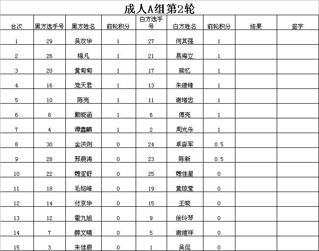
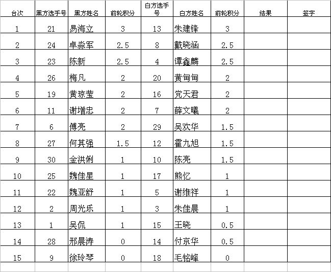
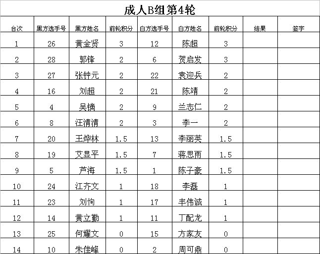

浙江赛消息
首页
五子棋新闻
#1 浙江赛消息 作者：无尽 发表时间：2009-7-18 12:00:47
58个人分两组比，比七轮然后前八淘汰
大鱼第一轮就碰李一了，疏星，还在进行中……
分组情况及第一轮对阵与结果
成人A组
选手号 姓名 前轮积分
1 吴侃 0 2 周光乐 1
3 朱佳晨 0 4 谭鑫麟 1
5 谢维祥 0 6 傅亮 1
7 薛文曦 0 8 戴晓涵 1
9 徐玲琴 0 10 陈亮 1
11 谢增忠 1 12 霍九旭 0
13 朱建锋 1 14 付京华 0
15 王晓 0 16 党天君 1
17 熊忆 1 18 毛铭峰 0
19 黄琼莹 0 20 黄甸甸 1
21 易海立 1 22 魏亚舒 0
23 陈新 0.5 24 卓淼军 0.5
25 魏佳星 0 26 梅凡 1
27 何其强 1 28 邢晨涛 0
29 吴欢华 0 30 金洪俐 1
成人B组
选手号 姓名 前轮积分
1 陈子豪 1 2 周可鼎 0
3 李一 0.5 4 吴镝 0.5
5 芦海 0 6 贺启发 1
7 蒋思雨 1 8 汪清清 0
9 兰志仁 1 10 朱佳峰 0
11 丁配龙 0 12 陈超 1
13 李丽英 0 14 黄立勤 1
15 方家友 0 16 刘超 1
17 丰伟诚 0 18 李磊 1
19 艾显平 0.5 20 王烨林 0.5
21 陈靖 0 22 袁迎兵 1
23 刘恂 1 24 江齐文 0
25 何耀文 0 26 黄金贤 1
27 张钟元 1 28 郭锋  
#2 Re:浙江赛消息 作者：方圆之外 发表时间：2009-7-18 12:02:26
 大鱼哥那组很BT。。
大鱼哥那组很BT。。
#3 Re:浙江赛消息（12:26更新） 作者：南京小飞机 发表时间：2009-7-18 13:00:00
师父“报仇”了
#4 Re:浙江赛消息（12:26更新） 作者：小丸.net 发表时间：2009-7-18 13:09:59
这次女选手不少，希望男选手碰上女选手时不要软。
#5 Re:浙江赛消息（12:26更新） 作者：浪人痴痴 发表时间：2009-7-18 13:14:17
大鱼李一和了传鹰 和米兰 都赢了 ，海月输了 小天 把 薛文曦 干掉了 风尘和卓淼俊
#6 Re:浙江赛消息（13:18更新） 作者：知易行难 发表时间：2009-7-18 13:23:46
不是有90个人么,少了很多啊
#7 Re:浙江赛消息（13:18更新） 作者：无尽 发表时间：2009-7-18 13:28:18
另外在少儿组，合起来的人数80多。原来90，不过有些比较早报名的又没空。
#8 Re:浙江赛消息（13:18更新） 作者：潇洒 发表时间：2009-7-18 13:28:54
有些是儿童组的
#9 Re:浙江赛消息（13:18更新） 作者：聂淼 发表时间：2009-7-18 13:31:21
现场转播没有，谱也没有，以前的浙江网站也进不去了，哎
#10 Re:浙江赛消息（13:18更新） 作者：王志伟123 发表时间：2009-7-18 13:36:59
什么时候发谱啊，期待中！
#11 Re:浙江赛消息（13:18更新） 作者：小丸.net 发表时间：2009-7-18 13:38:10
OK,我还是从实招了吧，鬼叔说，浙江赛不直播，不转播。。。。
#12 Re:浙江赛消息（13:18更新） 作者：王志伟123 发表时间：2009-7-18 13:50:33
啊啊晕
#13 Re:浙江赛消息（13:18更新） 作者：浪人痴痴 发表时间：2009-7-18 14:04:24
B组第二论表格
［ 无尽 于 2009-7-18 14:50:18 时奖励此帖[金币加 20 威望加1］
#14 Re:浙江赛消息（13:18更新） 作者：浪人痴痴 发表时间：2009-7-18 14:05:36
A组第二轮
#15 Re:浙江赛消息（14:05更新） 作者：没事摆石子玩 发表时间：2009-7-18 14:22:40
==============================
此帖内容被屏蔽!
==============================
此帖被无尽 屏蔽于 2009-7-18 17:59:55
#16 Re:浙江赛消息（14:05更新） 作者：写字板 发表时间：2009-7-18 14:27:43
原来还有姓党的，好威武
#17 Re:浙江赛消息（14:05更新） 作者：浪人痴痴 发表时间：2009-7-18 14:56:11
薛MM对棋情，瑞星开局，棋情交换
米兰对船鹰，瑞星开局，传鹰交换
海月对小鸟，瑞星开局，小鸟交换
#18 Re:浙江赛消息（14:05更新） 作者：方圆之外 发表时间：2009-7-18 15:14:52
看来瑞星不是一般的优~
#19 Re:浙江赛消息（14:05更新） 作者：思念是凌晨四点蓝 发表时间：2009-7-18 15:24:58
Re:浙江赛消息（14:05更新）没事摆石子玩 说到：
不发棋谱。。。。 终于明白了 伟鬼者 ********
你说什么呀 没到现实没资格说别人。
#20 成人组第3轮对阵 作者：无尽 发表时间：2009-7-18 17:55:09
成人A组第3轮
台次 黑方选手号 黑方姓名 前轮积分 白方选手 白方姓名 前轮积分 结果 签字
1 4 谭鑫麟 2 8 戴晓涵 2
2 11 谢增忠 2 13 朱建锋 2
3 20 黄甸甸 2 21 易海立 2
4 23 陈新 1.5 27 何其强 1.5
5 24 卓淼军 1.5 29 吴欢华 1.5
6 6 傅亮 1 1 吴侃 1
7 2 周光乐 1 7 薛文曦 1
8 10 陈亮 1 12 霍九旭 1
9 16 党天君 1 17 熊忆 1
10 19 黄琼莹 1 25 魏佳星 1
11 14 付京华 0.5 26 梅凡 1
12 15 王晓 0.5 3 朱佳晨 0
13 5 谢维祥 0 9 徐玲琴 0
14 18 毛铭峰 0 22 魏亚舒 0
15 28 邢晨涛 0 30 金洪俐 0
成人B组第3轮
台次 黑方选手号 黑方姓名 前轮积分 白方选手号白方姓名 前轮积分 结果 签字
1 6 贺启发 2 9 兰志仁 2
2 12 陈超 2 16 刘超 2
3 22 袁迎兵 2 26 黄金贤 2
4 1 陈子豪 1 3 李一 1.5
5 4 吴镝 1.5 5 芦海 1
6 7 蒋思雨 1 13 李丽英 1
7 8 汪清清 1 14 黄立勤 1
8 21 陈靖 1 17 丰伟诚 1
9 18 李磊 1 27 张钟元 1
10 23 刘恂 1 28 郭锋 1
11 2 周可鼎 0 19 艾显平 0.5
12 10 朱佳峰 0 20 王烨林 0.5
13 11 丁配龙 0 15 方家友 0
14 24 江齐文 0 25 何耀文 0
#21 Re:浙江赛消息（17:56更新） 作者：堇色 发表时间：2009-7-18 18:17:20
海月名人跟高飞大师 加油额。。。
加油额。。。
#22 Re:浙江赛消息（17:56更新） 作者：武汉荆楚情 发表时间：2009-7-18 20:04:10
代表湖北的选手们，我为你们加油！调整好心态，好戏在后面，看你们的了！你们很！
［ 无尽 于 2009-7-18 20:12:00 时奖励此帖[金币加 20 威望加1］0+1
#23 Re:浙江赛消息（17:56更新） 作者：团子 发表时间：2009-7-18 20:48:22
中华连珠网上有好多上海连珠会会员李洁从浙江比赛现场发回的独家照片。
http://www.shwzq.com/matches/other/2009/0718/286.html
#24 Re:浙江赛消息（17:56更新） 作者：团子亲卫队 发表时间：2009-7-18 21:23:38
楼上跟我是同好么~
［ 团子 于 2009-7-18 23:07:21 时花20金币送鲜花一朵］
［ 团子 于 2009-7-18 23:07:48 时花20金币送鲜花一朵］
#25 第三轮部分结果 作者：无尽 发表时间：2009-7-18 23:12:05
谭鑫麟 0.5-0.5 戴晓涵
陈新 1-0 何其强
贺启发 1-0 兰志仁
袁迎兵 0-1 黄金贤
吴镝 0.5-0.5 芦海
#26 Re:浙江赛消息（17:56更新） 作者：松痕 发表时间：2009-7-18 23:18:12
现在噶在比赛啊?
#27 Re:浙江赛消息（25楼更新） 作者：无尽 发表时间：2009-7-18 23:21:56
比完了，第三轮18点到21点。
#28 Re:Re:浙江赛消息（17:56更新） 作者：团子亲卫队 发表时间：2009-7-18 23:28:00
引用：
原文由 团子 发表于 2009-7-18 20:48:22 :
中华连珠网上有好多上海连珠会会员李洁从浙江比赛现场发回的独家照片。
http://www.shwzq.com/matches/other/2009/0718/286.html
等我攒够钱了一定送你鲜花，哈哈~
#29 Re:浙江赛消息（25楼更新） 作者：梦婷 发表时间：2009-7-19 0:16:20
谁再提供点详细消息哈
#30 Re:浙江赛消息（25楼更新） 作者：极地剑客 发表时间：2009-7-19 6:29:10
图片里面第6张地MM是哪位?????
#31 Re:浙江赛消息（25楼更新） 作者：极地剑客 发表时间：2009-7-19 6:37:31
风尘大师那把扇子估计就冷溪隆买地~京剧脸谱,还有十八罗汉好几种花样的~
#32 第四轮对阵 作者：无尽 发表时间：2009-7-19 9:20:44
成人A组第4轮


#33 Re:浙江赛消息（32楼更新） 作者：潇洒 发表时间：2009-7-19 9:23:25
图片打不开
#34 Re:浙江赛消息（32楼更新） 作者：无尽 发表时间：2009-7-19 9:24:54
我能看到，其他人呢？
#35 Re:浙江赛消息（32楼更新） 作者：dyccj 发表时间：2009-7-19 9:26:13
大家看不到，才是真得看不到。
#36 Re:浙江赛消息（32楼更新） 作者：潇洒 发表时间：2009-7-19 9:30:07
巨汗 海月老师连输三轮。。。
#37 Re:Re:浙江赛消息（32楼更新） 作者：写字板 发表时间：2009-7-19 9:44:17
王哥能看到，谁敢看不到
#38 Re:浙江赛消息（32楼更新） 作者：dyccj 发表时间：2009-7-19 10:11:13
 这谁家的小宝贝儿呀……
这谁家的小宝贝儿呀……
#39 Re:Re:浙江赛消息（25楼更新） 作者：团子亲卫队 发表时间：2009-7-19 10:43:09
引用：
原文由 极地剑客 发表于 2009-7-19 6:29:10 :
图片里面第6张地MM是哪位?????
北京的王晓
#40 Re:浙江赛消息（32楼更新） 作者：极地剑客 发表时间：2009-7-19 11:09:22
谢谢楼上啊~漂亮MM~
#51 Re:Re:浙江赛消息（42楼更新） 作者：团子亲卫队 发表时间：2009-7-19 15:42:06
引用：
原文由 菜包先生 发表于 2009-7-19 15:25:51 :
引用：
原文由 游戏人间 发表于 2009-7-19 14:48:35 :
不是危险啊是肯定出线不了了。。后面开始欢乐五子棋
全胜积6。5也出不了？雄起啊，看好你
是啊，不要轻易放弃呀~
#52 Re:浙江赛消息（42楼更新） 作者：百医天使 发表时间：2009-7-19 15:45:01
关键是全胜只有4.5分了,应该是很难出线了,出线分应该说是最少5分还要比小分.
#61 Re:浙江赛消息（54楼更新） 作者：聂淼 发表时间：2009-7-19 20:52:47
应该下午就比完了吧，杂还没消息哦，没一个上网的哦？
#62 Re:Re:浙江赛消息（54楼更新） 作者：团子亲卫队 发表时间：2009-7-19 21:25:50
引用：
原文由 聂淼 发表于 2009-7-19 20:52:47 :
应该下午就比完了吧，杂还没消息哦，没一个上网的哦？
都奋战呢……
#63 Re:浙江赛消息（54楼更新） 作者：无尽 发表时间：2009-7-19 21:50:46
梅凡 胜 戴晓涵
卓淼军 胜 谭鑫麟
陈新 胜 易海立
黄金贤 胜 陈靖
第六轮6点半就比完了
#64 Re:浙江赛消息（54楼更新） 作者：浪人痴痴 发表时间：2009-7-19 21:56:23
棋情胜病魔
白痴胜李一
#65 Re:浙江赛消息（54楼更新） 作者：无尽 发表时间：2009-7-19 21:58:10
B组白痴 混混确保出线了
A组同分或接近的相对比较多。。
#66 六轮过后 作者：无尽 发表时间：2009-7-19 23:02:14
A组
5分 梅凡、薛文曦
4.5分 戴晓涵、卓淼俊、陈新
4分 朱建锋、谭鑫麟、谢维祥、黄甸甸
B组
5.5分 黄金贤、贺启发
4.5分 艾显平
4分 李一、陈靖、刘超、芦海
#67 Re:浙江赛消息（54楼更新） 作者：雪飞 发表时间：2009-7-19 23:10:28
PS：只是成绩罗列，不是排名。
第六届浙江五子棋公开赛成人A组六轮后成绩
注：毛铭峰与付京华最后一轮结果未知。
第六届浙江五子棋公开赛成人B组六轮后成绩
［ 无尽 于 2009-7-20 7:51:01 时奖励此帖[金币加 20 威望加1］
#68 Re:浙江赛消息（54楼更新） 作者：聂淼 发表时间：2009-7-19 23:24:12
听说是同分先比胜率
#69 Re:浙江赛消息（54楼更新） 作者：我就不信注册不上 发表时间：2009-7-20 6:53:08
这个赛制好像还是有点问题，最后一两轮时候领先的，可以选择刻意打平即可保证自己出现，比如A组米兰和薛文熙今天只要议和就能双双出现。一般的瑞士制比赛最后两轮的第一台都是冠军决战，非拼个你死我活不可，这次却反其道而行之。。。
#70 第七轮对阵及结果 作者：无尽 发表时间：2009-7-20 8:39:20
A组
1台 薛文曦 - 梅凡 0.5-0.5
2台 戴晓涵 - 陈新 1-0
3台 朱建锋 - 卓淼俊 1-0
4台 谭鑫麟 - 谢维祥 0-1
5台 陈亮 - 黄甸甸
6台 易海立 - 何其强 1-0
7台 周光乐 - 吴欢华
8台 傅亮 - 谢增忠
9台 党天君 - 金洪俐
10台 吴侃 - 霍九旭
11台 朱佳晨 - 徐玲琴
12台 魏佳星 - 王晓
13台 熊忆 - 黄琼莹
14台 毛铭峰 - 刑晨涛
15台 付京华 - 魏亚舒
B组
1台 贺启发 - 艾显平 0-1
2台 李一 - 黄金贤 1-0
3台 芦海 - 刘超
4台 吴镝 - 陈靖
5台 兰志仁 - 陈子豪
6台 陈超 - 周可鼎
7台 汪清清 - 李磊
8台 黄立勤 - 张钟元
9台 江齐文 - 郭锋
10台 朱佳峰 - 李丽英
11台 蒋思雨 - 王烨林
12台 丰伟诚 - 袁迎兵
13台 何耀文 - 刘恂
14台 丁配龙 轮空
#71 Re:浙江赛消息（71楼更新） 作者：丹尼 发表时间：2009-7-20 9:21:15
好早啊,辛苦了
#72 出线名单 作者：无尽 发表时间：2009-7-20 10:41:21
A组出线：戴晓涵5.5、薛文曦5.5、梅凡5.5、谢维祥5
B组出线：贺启发5.5、艾显平5.5、黄金贤5.5、陈靖5
#73 Re:浙江赛消息（71楼更新） 作者：nara 发表时间：2009-7-20 11:18:01
浙江这个参赛规模还是挺大，可惜报导的规模就。。。。。
#74 Re:浙江赛消息（71楼更新） 作者：百医天使 发表时间：2009-7-20 11:22:26
比全国赛还差的，以后改进吧。
#75 Re:浙江赛消息（71楼更新） 作者：梦婷 发表时间：2009-7-20 11:43:34
http://www.5zq.net/news/homenews/200907/324.html第六届浙江五子棋公开赛成人组第七轮对阵及结果
#81 Re:第六届浙江五子棋公开赛淘汰赛对阵 转自五子茶馆 作者：松痕 发表时间：2009-7-20 14:19:49
引用：
原文由 无尽 发表于 2009-7-20 13:08:35 :
江苏两个上了末班车.
#82 没转播了，等结果。。 作者：无尽 发表时间：2009-7-20 15:56:49
半决赛：
梅凡 VS 戴晓涵（黑）
=======上图对应的爱五子棋谱代码如下，以便你拆解：========
h8h9h6g10g6g9i9i8f11g7g8f9e8f7e7e9d9f6f8d8g11h10i10i11j12k10g12h13h11j9l11f13j10k11k12j13g13g14j7i6l9l8k8m10f4
======================================================
贺启发（黑） VS 黄金贤 黑胜
=======上图对应的爱五子棋谱代码如下，以便你拆解：========
h8i9g6g9f9h10f8g11f12f10g8e8e9g7e10h7e11
======================================================［ 雨一直下 于 2009-7-20 16:45:09 时花20金币送鲜花一朵］
［ 堂堂 于 2009-7-20 17:00:14 时花20金币送鲜花一朵］
#83 Re:浙江赛消息（白痴率先挺进决赛） 作者：忧郁的双眼 发表时间：2009-7-20 17:18:10
小天机会更大
#84 Re:浙江赛消息（白痴率先挺进决赛） 作者：雨一直下 发表时间：2009-7-20 17:24:28
白痴加油加油加油
#85 Re:浙江赛消息（白痴率先挺进决赛） 作者：炫飞冰弦 发表时间：2009-7-20 17:37:22
白痴加油啊
#86 Re:浙江赛消息（白痴率先挺进决赛） 作者：None 发表时间：2009-7-20 18:08:39
白痴加油
#87 Re:浙江赛消息（白痴率先挺进决赛） 作者：聂淼 发表时间：2009-7-20 18:11:09
哦，现在米兰和白痴发挥都很稳定了，算是我国的超一流了
#88 Re:Re:浙江赛消息（白痴率先挺进决赛） 作者：极地剑客 发表时间：2009-7-20 18:26:49
引用：
原文由 聂淼 发表于 2009-7-20 18:11:09 :
哦，现在米兰和白痴发挥都很稳定了，算是我国的超一流了
围观超一流~~~~~~~~~~~~~~~~
#89 Re:浙江赛消息（白痴率先挺进决赛） 作者：无尽 发表时间：2009-7-20 18:34:32
米兰和小天 进行15分钟加赛
#90 Re:浙江赛消息（白痴率先挺进决赛） 作者：无尽 发表时间：2009-7-20 18:53:42
小天胜出
明早进行决赛
#91 Re:浙江赛消息（决赛 白痴VS小天） 作者：风铃 发表时间：2009-7-20 18:55:37
听说小天胜了？
#92 Re:浙江赛消息（决赛 白痴VS小天） 作者：聂淼 发表时间：2009-7-20 18:57:48
哦，超一流输了
#93 Re:浙江赛消息（决赛 白痴VS小天） 作者：战神巴蒂 发表时间：2009-7-20 19:01:17
两个小组第一决赛，也是不错的结果
#94 Re:浙江赛消息（决赛 白痴VS小天） 作者：松痕 发表时间：2009-7-20 20:37:29
比世锦赛还要激烈啊.
#95 Re:浙江赛消息（决赛 白痴VS小天） 作者：百医天使 发表时间：2009-7-20 21:42:00
看来国内高手之间,差距很小,差不多,谁胜都可以理解.
#96 Re:Re:浙江赛消息（决赛 白痴VS小天） 作者：团子亲卫队 发表时间：2009-7-20 21:49:55
明天谁开局？感觉假先方有一晚上的时间准备，优势很大呀~
［ 失落刀 于 2009-7-20 22:44:41 时奖励此帖[金币加 20 威望加1］0+1
#97 Re:浙江赛消息（决赛 白痴VS小天） 作者：思念是凌晨四点蓝 发表时间：2009-7-21 0:50:03
是 猜子 决定谁开局， 到明天才知道。
#98 Re:浙江赛消息（决赛 白痴VS小天） 作者：蝶影随风 发表时间：2009-7-21 8:25:14
小天老师加油.
#99 决赛进行时 作者：无尽 发表时间：2009-7-21 9:30:50
戴晓涵（黑） VS 贺启发（白）
#100 Re:浙江赛消息（决赛进行时……） 作者：无尽 发表时间：2009-7-21 9:52:34
梅凡胜黄金贤 获得季军 黄金贤第4
=======上图对应的爱五子棋谱代码如下，以便你拆解：========
h8g7i9h7f7f8e9g9g8i10h10g11g6e6k8j7j8i8k7l6k9k6h9k11l10m11l8l9j6m9m8n8h6i7j11i4h4i5i6f6j5d9g12h12d8n6n7k3l5l4m5k5m7k2k4o6
======================================================陈靖胜薛文曦分获5、6名
艾显平胜谢维祥分获7、8名 棋情开花月
#101 Re:浙江赛消息（决赛进行时……） 作者：极地剑客 发表时间：2009-7-21 9:58:23
道道无敌了所~
#102 Re:浙江赛消息（决赛进行时……） 作者：百医天使 发表时间：2009-7-21 10:21:51
道道不是无敌了，是成长了，也是江苏的希望之星。
#103 Re:Re:浙江赛消息（决赛进行时……） 作者：斜月 发表时间：2009-7-21 10:52:52
引用：
原文由 百医天使 发表于 2009-7-21 10:21:51 :
道道不是无敌了，是成长了，也是江苏的希望之星。
道道就是著名的“两道”么？是何其强还是陈靖？
#104 Re:浙江赛消息（决赛进行时……） 作者：无尽 发表时间：2009-7-21 10:59:37
戴晓涵黑胜贺启发
=======上图对应的爱五子棋谱代码如下，以便你拆解：========
h8h7h10g6g10g7i7i8f5g9g8e7e9f10d7e6f6f9f8f4k9g4e4i4h5g5g3d8f3g2h3e3h6j7l5j8j6h4j4i3k10i2k5l4i5j5j2j10m8l9k11k12j11i11k7k8m9l8m10
======================================================
#105 Re:Re:浙江赛消息（决赛进行时……） 作者：aabb 发表时间：2009-7-21 11:05:19
引用：
原文由 无尽 发表于 2009-7-21 9:52:34 :
艾显平胜谢维祥分获7、8名 棋情开花月
有这局的谱没。。。想看看是哪个变化。。。居然开花月。。
#106 Re:浙江赛消息 作者：淡红的秋樱 发表时间：2009-7-21 11:10:01
祝贺一下道道。
#107 Re:浙江赛消息 作者：风铃 发表时间：2009-7-21 17:20:23
白痴的24要下25貌似白必了
#108 Re:浙江赛消息 作者：王小 发表时间：2009-7-21 18:24:26
果然，24 下25， 就牛皮了！ 哈哈，看来这就是实战，理解理解
#109 Re:Re:浙江赛消息（决赛进行时……） 作者：极地剑客 发表时间：2009-7-21 18:25:39
道道无敌~~~~~~~~~~
#110 Re:浙江赛消息 作者：蛋老师 发表时间：2009-7-21 19:28:02
戴晓涵和贺启发那盘谱有问题吧
28下的啥???29???
#111 Re:Re:浙江赛消息 作者：团子亲卫队 发表时间：2009-7-21 19:41:54
引用：
原文由 蛋老师 发表于 2009-7-21 19:28:02 :
戴晓涵和贺启发那盘谱有问题吧
28下的啥???29???
嗯，我也感觉有点问题。这样不是直接VCT了么。
=======上图对应的爱五子棋谱代码如下，以便你拆解：========
h8h9h6i10i6i9g9g8j11i7i8k9k7j6l9k10j10j7j8j12e7i12k12g12h11i11i13l8f8
======================================================
#112 Re:Re:浙江赛消息（25楼更新） 作者：牛牛 发表时间：2009-7-22 10:36:52
引用：
原文由 极地剑客 发表于 2009-7-19 6:29:10 :
图片里面第6张地MM是哪位?????
极地大侠 ,我看还是第22张和第40张的好
#113 Re:Re:浙江赛消息（54楼更新） 作者：慕容晓文 发表时间：2009-7-22 11:18:45
不是最后一轮议和就双双出线，而是六轮结束后提前一轮双双出线……
#114 Re:Re:Re:浙江赛消息（54楼更新） 作者：我就不信注册不上 发表时间：2009-7-22 22:15:42
引用：
原文由 慕容晓文 发表于 2009-7-22 11:18:45 :
不是最后一轮议和就双双出线，而是六轮结束后提前一轮双双出线……
不然，如果分出胜负，两人不一定双双出线的